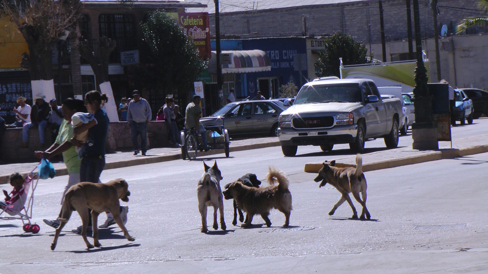

¿PORQUÉ HAY TANTOS PERROS EN LA CALLE?

Todos sabemos que es impresionantemente alto el número de perros que viven en situación de calle, y si bien, tal vez no se dimensiona de forma correcta cuántos perros se encuentran en abandono, sobre todo porque es difícil imaginarlo; es importante que, como sociedad, entendamos esta problemática, se que en México existen 28 millones de perros en la calle.
¿DONDE DUERMEN LOS PERROS CALLEJEROS?
En el día viven en lugares frescos si la temperatura es alta, sin embargo si hace frío prefieren dormir al sol, duermen la mayor parte del día y al atardecer se reactivan para buscar alimento y agua, recorriendo varios kilómetros inclusive, cuando se agotan durante las noches buscan un lugar que mantenga un poco de calor.